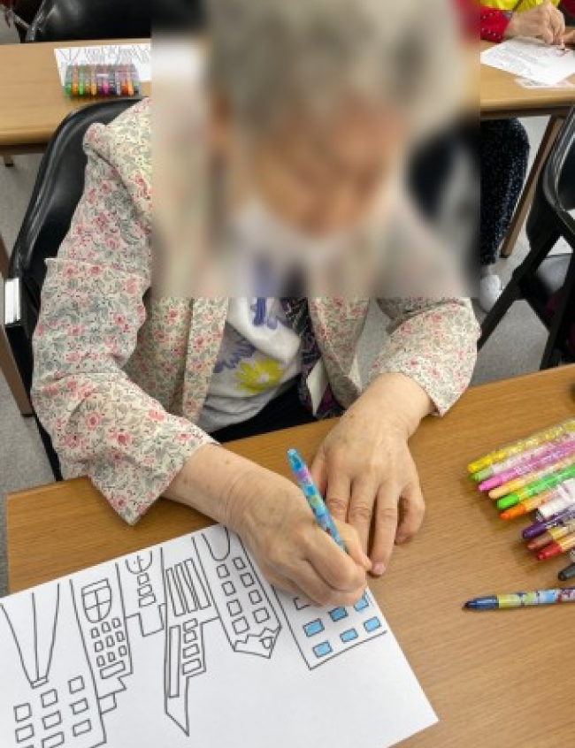
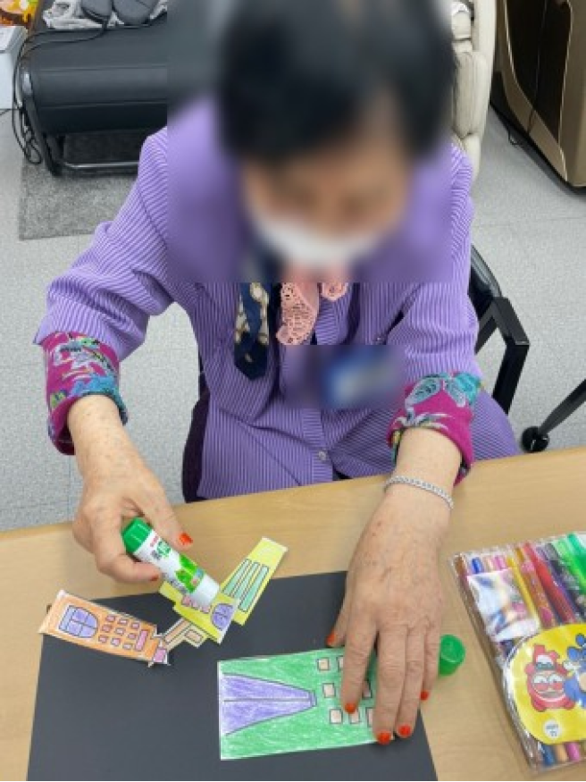
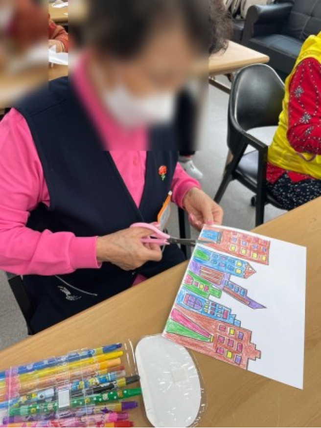
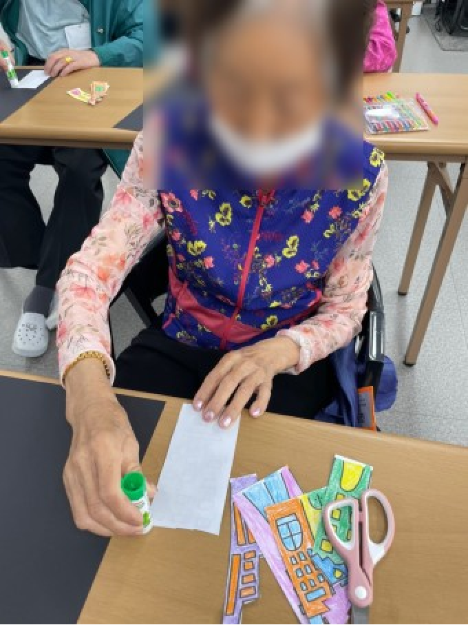
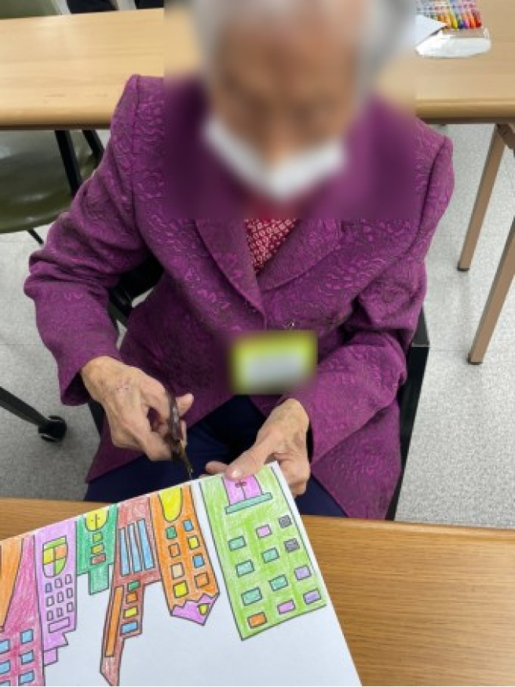

- 2024년 9월 6일(금)
- [2024년9월6일] 미술활동 색칠하기 & 치매예방 건강체조
오늘도 우리 아르고 주간보호센터 어르신들과 행복한 시간을 보내었습니다. 어르신들 건강한 모습 그리고 행복한 모습을 함게 할 수 있어 너무나 감사합니다.
[오전 프로그램] 미술 프로그램     미술 프로그램입니다. 어르신들의 창의력 및 집중력 향상을 위해 진행해보았습니다.
알록달록 예쁘게 색칠하고, 자르고 붙여보며 가지각색의 프로그램을 진행해보았습니다.
우리 어르신들이 만든 멋진 작품입니다.
전문 강사님이 진행해주시는 건강체조 시간입니다. 우리 어르신들 오랜만에 승부욕이 샘솟으셨는데요, 활기찬 모습이 멋졌습니다.
이렇게 동료 어르신과 함게하는 활동은 사회적 유대감을 형성하고 스트레스를 해소합니다. 치매 예방과 우울증 예방도 동시에 할 수 있어요.
앞으로도 어르신들의 기운찬 일상을 위해 저희 아르고 주간보호센터는 항상 노력하겠습니다.
감사합니다!
사진받기
모든 파일을 다운 받으시겠습니까?
활동일지
사진 받기
여기를 눌러 모든 사진을
저장할 수 있어요